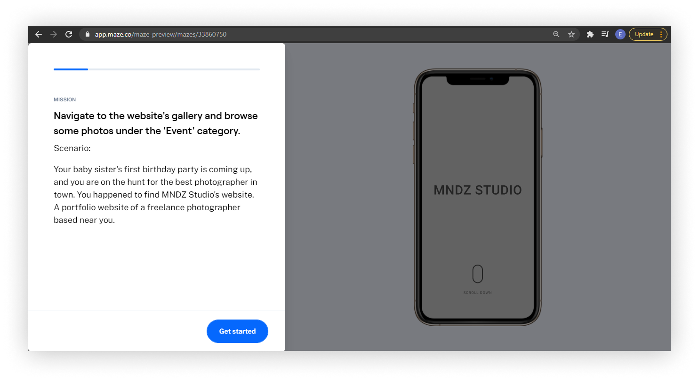

MNDZ Studio Website
Mike Mendoza, also known as MNDZ Studio, is a freelance photographer based in Marikina City. For this project, my role was to design his portfolio website along with an online scheduling tool.

ROLE
- User research, User flows,
- Wireframing, Visual Design,
- Prototyping, Usability Testing
TEAM
- Emille Juliene Armentia
- (Solo)
PROJECT DATE
December 2020
(3 Weeks)
THE CHALLENGE
What Is the Desired Outcome?
The goal was to create a clean and user-friendly website design that would feature his works, vision, and contact information. He also requested an additional tool that would help him set and manage his appointments with his clients.
DESIGN PROCESS
A Non-Linear Process
For this project, I decided to use the five stages of the Design Thinking
model
proposed by the Hasso-Plattner Institute of Design at Stanford.

EMPATHIZE
Learning About the Client + His Audience
The first step is to gain an understanding of what my client and his target audience needs. I conducted an in-depth interview with Mike, my client, through Zoom. Our discussion helped me gain a better grasp of what kind of vision he wants for his website. Here are some of the questions asked from the interview:
- Which platforms do you showcase your works?
- How do you gain clients, and how did the pandemic affect your career?
- How can clients book with your services?
- How do you manage appointments with your clients?
- Do you feel satisfied or unsatisfied with your current business process?
- What are the struggles you have encountered with dealing business with your clients?
- Can you describe your ideal portfolio website?
I also asked him if he could help me reach out and interview some of his previous clients. During this stage, I considered that having additional insights from Mike's clients could help me identify other design opportunities I might have missed. Through this, I got the chance to know more about what kind of clients Mike had. Also, how he deals with his current business process.
DEFINE
Defining What the Users Need
To book a service with MNDZ Studio, the potential client usually sends a direct message to Mike through Facebook or Instagram. From there, Mike and his client set a meeting to discuss pricing, dates, and other business-related inquiries.
Problem #1: Due to being preoccupied with work and attending business and personal matters, my client is worried that he finds himself unable to respond immediately to his client's messages. Our solution should deliver a way for potential clients to view information such as pricing, vacant schedules and set appointments on their own to reduce waiting time.
Furthermore, my client used to hand out calling cards in events to expand his client network. From doing event shoots such as weddings and birthday celebrations, he now only accepts product shoots to ensure his and his client's safety from the virus.
Problem #2: Mike has fewer client bookings as to what he usually had before the pandemic. His career was affected by the pandemic lockdowns, and he had to limit his services. Our goal is to deliver a solution that would help him gain more clients without risking his safety from the COVID-19 virus.
During the empathize stage, I have also gathered the following quantitative data:
- 12 out of 12 clients prefer using their smartphones on browsing the internet.
- 4 out of 12 respondents were recurring clients.
- 12 out of 12 clients are already friends with Mike on social media before discovering his Facebook and Instagram page.
IDEATE
Designing From Scratch
I started to create user flows and lo-fi wireframes for my client's website.
With the
research
findings showing that most clients are smartphone users, our goal is to ensure that the
design
is responsive. I used Figma to create two sets of wireframes, one each for the desktop and
mobile versions.

PROTOTYPE
Building Prototypes + Visual Language
Once he was happy with the website's structure, I proceeded to create the
mid-fidelity
prototypes
to be used for usability testing.

In between prototyping and testing, we also started to create the visual
language for MNDZ
Studio. My client specifically wanted a minimalist theme, so I had put together color
palette
options on placeholder mockups to help him choose during this selection. My client wanted a
dark
color scheme, so we went for the third option.

I conducted the same process for font selection. I used the same placeholder
mockup to
present
the font pairing options to my client, and we decided that Ubuntu and Open Sans are the best
fit
for his style.

TEST
Guerilla Usability Testing
Being a solo designer stuck in the middle of a pandemic— the step I found
challenging the
most
was to search for random individuals who will test out my design. Then I discovered Maze, a
platform used for remote testing.

I decided to run a guerilla test with this platform. Maze help researchers run surveys and validate design ideas through missions. And with my prototype and script ready, setting up everything was quick and easy. 
Next, I gathered some online acquaintances who were willing to help me with
this activity and
provide feedback on the design. Our goal was to make sure potential viewers can navigate
easily
through the website. And the results showed that all seven testers found the design
intuitive.

Five testers gave the website's structure the highest rating, which is five on
the opinion
scale.
Others voted for three and four stars.

We also asked testers to provide comments on the design and possible suggestions that may help us improve the design structure. Here are some of the feedback we received:
- "User-friendly!"
- "The design is great if the goal is a minimalist theme. Maybe try testing other fonts and color theme, I guess."
- "I love the minimalistic UI, especially when you know when to navigate/swipe further. In terms of sequence, maybe arrange the pricing in ascending order while seamlessly go back to the lowest price (loop back to lowest from highest price)."
- "Explore other gallery designs."
FINAL PRODUCT
Landing Page
The website's hero section is the first thing potential clients and website
visitors will see
upon visiting MNDZ Studio's landing page. This page also includes the gallery, about, and
contact section.

Pricing Page
This page will display all of MNDZ Studio's rates and pricing packages.

Booking Page
Potential clients may book appointments on their own through MNDZ Studio's
booking page. Fully
booked dates will also be displayed on the form's calendar picker so clients can see which days
are available.


Scheduling Tool
The scheduling tool will be a password-protected page where my client can
manage all of his
appointments.


Mobile Prototypes
I also made the mobile versions of the high-fidelity prototypes so my client
can see how the
design will translate into mobile view.

OUTCOME & TAKEAWAYS
What I've Learned
After doing a couple of design iterations based on the feedback, and the visual language in place, I successfully provided my client the final deliverables— the high-fidelity prototypes for MNDZ Studio's website. Overall, my client was happy and satisfied with the design and will be pushing through its development sometime in 2021.
From this project, I have learned that testing from the early stages will save you a lot of time. Unlike doing user-interface design right away, testing, then having to do numerous design revisions, I focused on assessing the created user flows and initial prototypes first. Once that's settled, it is much easier to get into the right visual direction of what your client wants.